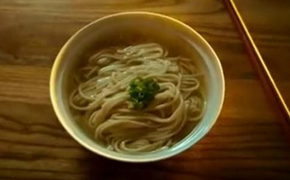

十五年前的除夕夜，一家面馆老板正准备关门之时，一个女人带着两个小男孩走进来，低声地喊着：“一碗汤面！”老板自动多丢了半个面团，煮了满满一大碗，老板娘和客人都不知道。
母子三人匆匆地吃完了，同声夸赞：“真好吃，谢谢！”并且微微地向老板鞠了一躬；当他们走出面馆时，老板和老板娘则向他们说“谢谢你们！新年快乐！”
第二年除夕夜，他们又是最后的三位客人，同样地只叫了一碗汤面。老板娘问丈夫：“煮三碗面给他们吃好不好？”丈夫回答道：“不行，这样做他们会不好意思的。”随即多丢半团面条到滚烫的锅子里。
第三年的除夕夜，这三人又出现，点了两碗汤面，老板丢了三团面进去；后来这三人就没有再出现了。不过三人原来所坐的位置后来成了面馆“幸福的桌子”。
直到十多年后，两个青年穿着笔挺的西装与一名穿着素雅的妇人走进面馆，妇人慢慢地说：“麻烦…麻烦…为我煮一碗汤面…。”老板娘才发现眼前的三人就是合叫一碗汤面的母子，不过这次三人终于点了三碗汤面。
他们向老板夫妇道谢，并表示“我们母子三人曾在十多年前的除夕夜叫了一碗汤面，受到那一碗汤面的鼓励，才能坚强的活下去”，并叙述了十多年来的奋斗过程；老板夫妇感动得眼眶里溢满了泪水。
由此可见，物质或身体的满足并不能带来真正的幸福，唯有心灵的充实与富足，才能克服贫困艰苦的环境。
因此，在
1、盲人，这种人既不知如何使自己拥有的
2、独眼人，这种人眼里除了金钱以外，其他什么都看不见，一辈子只知道如何使自己拥有的财富增长和创造新财富，但不知道如何培养高尚的道德质量。这种人只有一只金钱眼，而没有道德的慧眼，所以称之为“独眼人”。
3、双眼者，这种人既有能力使自己已有的财富增长，不断的获得新财富，又能培养良好的道德质量。由于这种人既有金钱之眼，又有道德之慧眼，故是一双完整无缺眼睛。
这部经典较深刻之处，正在于它对只有一只金钱之眼的人进行了生动的描绘。而对仅有道德之慧眼而无金钱眼之人，并未被单独列为一类人，因为满足最基本的物质需求，比单纯的道德更有实际的价值。
为了进一步论述这个道理，在南传佛教《中部》的《巴陀伽摩经》中。
佛陀又把人类的最基本的渴望分为四种：1、愿我的财富通过正当的途径一天天地增加。也就是说，每个人都希望自己富有，财富是人们最渴望得到的东西。
2、当一个人富有后，他所渴望的是美名远扬。他如此地祝愿：愿我的美名传遍四方，特别是要在我的亲朋好友、师长中流传。
3、当一个人既拥有了财富而又有了好名声，他就会祈求
4、当一个人富有、美名远扬又健康长寿，他自然就会希望死后幸福。他如此地祝愿：愿我死后生天享福。
虽然追求财富是人们与生俱来的欲望，但是正如俗话所讲：“君子爱财，取之有道。”也就是说，财富是可爱的，但我们必须以合理、合法的手段去追求，这样得来的财富才会心安理得。在佛教的根本教义的“八正道”（
虽然众生最重要的生存意义是延续“法身慧命”，但是其前提是延续色身；要延续色身就必须依赖饮食长养，这就必然涉及社会上的经济
又佛陀在《善生经》中为善生童子开示生存之道时说：“先当学技艺，而后获财富。”一个人在社会上立足，必须有一定的谋生之道，即使拥有福报，也还需要通过相应的技能才能得以实现。而更为重要的是，必须
如果从事商业经营，应该以自利利人的心来赚取应赚的利润，并把赚来的钱作合理的支配，而不仅是为了个人的物质享受和满足虚荣而花费，若能如此，就不算是因贪心而赚钱了。
《善生经》中说，①家计的生活，②营业的资本，③储存在家以防意外，④放款生息。
在两千五百年前的印度，这是非常安全而合理的分配，到今天，储存在家和存入银行生息应该合而为一。此外，也应在这四份之中，酌量取出一部分作为三种用途：①供养父母，②周济亲友和部属仆从，③供养三宝，作为
对于财富如能取之有道并用之合理，如此，才能令我们身心健康，拥有幸福